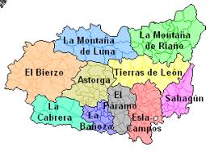
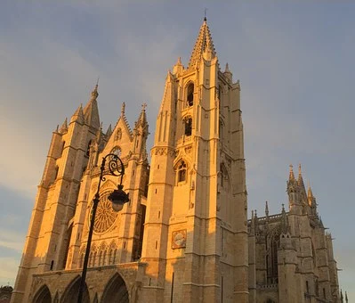

PROVINCIASAVILABURGOS PALENCIA SALAMANCA SEGOVIA SORIA VALLADOLID ZAMORA ENLACES EXTERNOS VOLVER AL INCIO |
LEÓNÍNDICE
1. LOCALIZACIÓNLeon se encuentra al noroeste de la comunidad 2. LOCALIDADES PRINCIPALESPrincipales ciudades:León, Ponferrada, San Andrés del Rabanedo, Villaquilambre, Astorga, La Bañeza y Bembibre Ubicacion de Leon capital: 3. GEOGRAFÍA DE LA PROVINCIACoordenadas geograficas: Latitud: 42.5999, Longitud: -5.57175. 42° 35′ 60″ Norte, 5° 34′ 18″ Oeste Superficie: 3.903 hectáreas, 39,03 km² Altitud: 842 Clima: mediterraneo Tiempo actual de Leon: 4. HISTORIA 5. CULTURAActividades de Ocio y Cultura6. NATURALEZALugares de interes 7. TRADICIONES8. OTROS ASPECTOSCinco personajes relevantes de Leon |